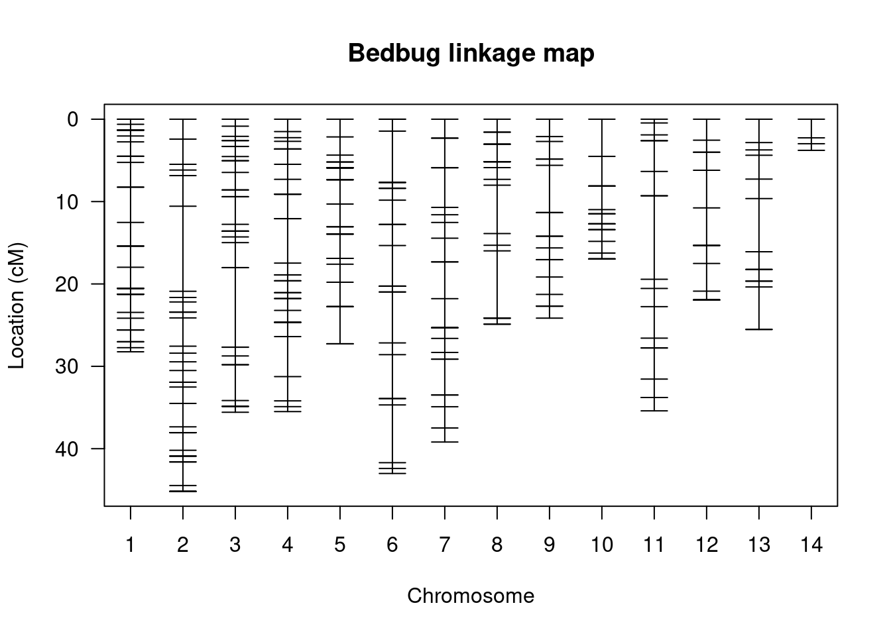
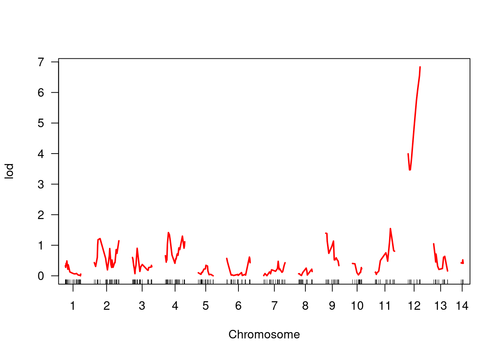
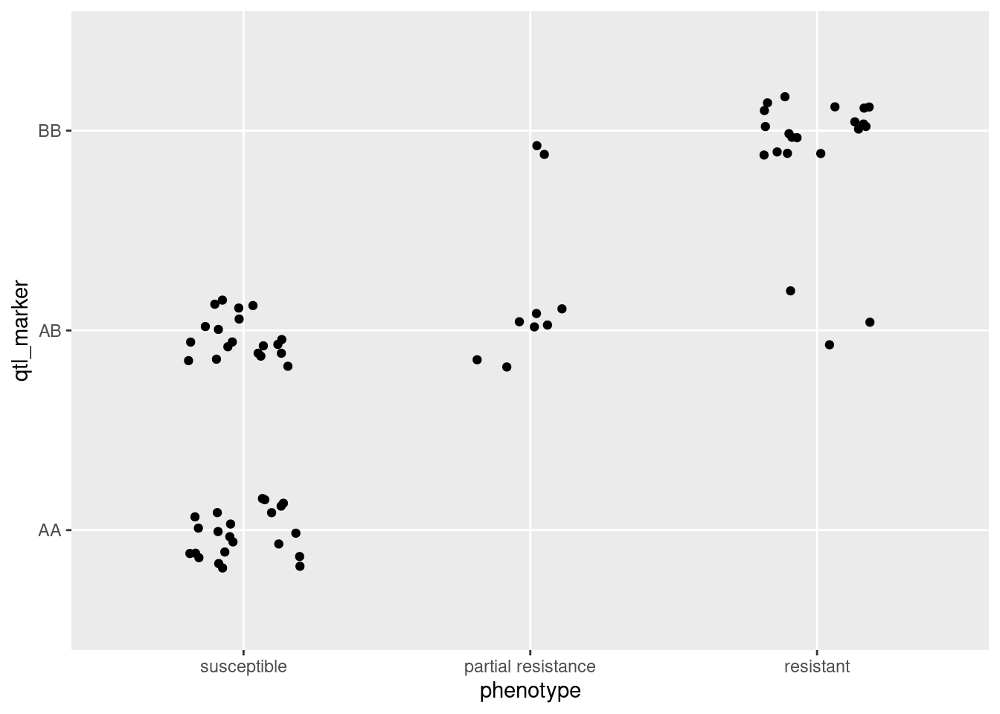

6.2 Performing a QTL analysis in bedbugs
6.2.1 Bedbugs, pesticide resistance and study design
We are going to use the qtl package in R to perform a basic QTL analysis on pesticide resistance on an F2 intercross in bedbugs, Cimex lectularius. A QTL analysis is a method for identifying the genes that underlie a specific phenotypic trait. For information on the principles behind a QTL analysis, have a look at section 6.3.4 in the textbook. Note that all the data we use here come from Fountain et al (2016).
Bed bugs are an human ectoparasite that have experienced a population boom in the last two decades. They are nasty things, so a lot of research has focused on using pesticides to control them. However, some bedbug populations have evolved pesticide resistance, particularly to the most commonly used pyrethroid insecticide.
In their study, Fountain et al crossed two strains of bedbugs. one resistant to the pesticide and the other susceptible. Using a resistant female and susceptible male, they created an F1 generation and then crossed two randomly selected F1 offspring, ultimately producing 90 F2 individuals. They then exposed the F2s to pytheroid insecticide and scored their resistance to it. The pesticide disrupts motor function, so F2s were scored either as susceptible (unable to right themselves if turned over), partially resistant (able to right themselves but walk with some difficulty) and resistant (walk normally, no apparent effect on motor control).
The two grandparents, the two F1 parents and the 90 F2s were then genotyped using RAD-sequencing. RAD-sequences were mapped to a draft bedbug genome and then SNPs were called from 12 962 RAD tags. With this data we can perform a QTL analysis to identify the areas of the bedbug genome that are associatied with resistance to the pesticide.
6.2.1.1 Reading in the bedbug data
First we need to download the data, which is here
Since we loaded the qtl package at the start of the tutorial, we can now read in the data using the read.cross() function.
bedbugs <- read.cross(format = "csv", dir = "",
file = "./bedbugs_cross_data.csv",
genotypes = c("AA", "AB", "BB"),
estimate.map = FALSE)When you run this command, you will see that we read in the data from 71 individuals and 334 markers. Strangely, there are only two phenotypes here. This isn’t right, there should be three (susceptible, partially resistant, resistant), so we will need to correct this later. As mentioned in the introduction, the specifics of the functions in the qtl package, like read.cross(), are not that important at this point, but see the footnotes for some details.26
Try typing in bedbugs to see what you get in the R console. You’ll see a lot of summary information on the cross object we created when we red in the data. Again, it says there are only 2 phenotypes…
6.2.1.2 Correcting the phenotypes
So, we need to correct the phenotypes. Let’s first take a look at what is stored so far. The stucture of bedbugs is rather complex, but we can look at the stored values with $, as we would for a data frame.
# look at the phenotypes
bedbugs$phenoAha, the reason R says there are 2 phenotypes is because there are two columns in the phenotype data.frame - one called id and the other called res.27 This second variable is the resistance (i.e. S = susceptible, PR = partially resistant and R = resistant). We can extract the res column from bedbugs$pheno using an additional $, and store this to an object.
# Assign resistance as an environmental variable
res <- bedbugs$pheno$res6.2.1.3 Examining the linkage map
A linkage map is the position of markers in the genome in terms of their recombination distance from one another - i.e. how many recombination events occur between them. Lets take a look at a summary of the linkage map. Note that sometimes, a linkage map is also referred to as a genetic map.
# examing the bedbug linkage map
summaryMap(bedbugs)This returns a data.frame where each row is a linkage group. A linkage group is all the genes on one chromosome - so each row here is one chromosome. The four columns are:
n.mar - the number of markers length - the length of the linkage group in centimorgans (see below) ave.spacing - the average spacing between markers (in centimorgans) max.spacing - the maximum spacing between markers (in centimorgans)
We can see that that the 334 markers are spread across 14 linkage groups. Spacing of markers here is shown in centimorgans and the total length of the linkage map is 407 cM. Recall that a single centimorgan represents the probability that of 0.01 that a recombination event in one generation. Alternatively you could think of it as one recombination event every 100 generations.
Next we can take a look at the linkage map itself.
plotMap(bedbugs, show.marker.names = FALSE, main = "Bedbug linkage map")
This is a visualisation of the data from the summary table - i.e. it is the spacing and distribution of markers. There are 14 groups and we see the markers laid out on each of them. The further apart the markers are, the greater the probability that there will be a recombination event between them.
6.2.1.4 Performing a QTL analysis
With the linkage map in place, we can now attempt to actually map out pesticide resistance. Let’s take a look at the distribution of phenotypes.
# make a data.frame of the phenotype data
pheno <- data.frame(res)
ggplot(pheno, aes(res)) + geom_bar()You can see from this that majority of the F2 generation were susceptible to pyrethroid and that only a small number were partially resistant. When we perform a QTL mapping experiment, we are essentially looking for the genome region that can describe the greatest percentage of the variance in this phenotypic distribution.
Before beginning mapping, we need to perform one quick fiddle with our code. qtl requires that the phenotype is encoded as a number, so we use the following command to change our resistance coding to numbers.
# convert to numeric data
bedbugs$pheno$res <- as.numeric(res)
# examine the results
bedbugs$pheno$resWe’re now good to go! To perform the analysis, we will use the scanone function like so:
bedbugs_scan <- scanone(bedbugs, pheno.col = 2)You might see a warning here, but don’t worry too much about that since we are only looking at a simple example. So what exactly have we just done? Using the scanone function, we ran a QTL analysis across the entire set of markers and looked for an association between the genotypes at a marker and the phenotype. This is more or less an ANOVA, but we will return to that shortly. For now, let’s take a closer look at the results:
summary(bedbugs_scan, threshold = 3)Calling summary on the scan object shows us a single marker on linkage group 12 (referred to a chromsome here) at 21.9 cM may be a QTL. It also returns something called a lod - this is a LOD score and for this marker it is 6.84. Side note: The threshold = 3 argument told R to only show markers with a LOD score of more than 3. Try removing the argument and see what happens!
Let’s plot the LOD distribution to get a better idea of what is going on.
plot(bedbugs_scan, col = "red")
You can see quite clearly that whatever the LOD is, it is much higher on linkage group 12 and this peak focuses right where our marker is. This suggests a strong association between genotypes here and the phenotype in question.
What do we mean by a LOD score?
It is beyond the scope of the tutorial to go in to too much detail about this, but LOD stands for logarithim of the odds ratio. It is essentially the ratio between a model where a QTL exists at a marker and one where there is no QTL at all. So, if a LOD is 0 or close to 0, then there is essentially no evidence a QTL is present. However, if a QTL is present and explains variance in the phenotype then the LOD score is expected to be higher, as it is at this marker. For more info on LOD scores, see section 6.3.4 in the textbook.
6.2.2 Linking ANOVA to our QTL analysis
Now that we have performed a QTL analysis and learned about ANOVA, we will try to bring the two together to demonstrate how they are closely related… as well as demonstrating the importance of statistics in evolutionary genetics!
6.2.2.1 Exploring the phenotype-genotype association
A good way to summarise this data is to see it in a table. The following code summarises the association between different geno- and phenotypes for our locus. 28
# pheno - 1 is partially resistant, 2 is resistant, 3 is susceptible
phenotype <- factor(bedbugs$pheno$res, labels = c("partial resistance", "resistant", "susceptible"))
phenotype <- fct_relevel(phenotype, "susceptible")
pheno_geno <- plotPXG(bedbugs, pheno.col = 2, "r449_NW_014465016")
# geno - 1 is AA, 2 is AB, 3 is BB
qtl_marker <- factor(pheno_geno$r449_NW_014465016, labels = c("AA", "AB", "BB"))
# make into a data frame
qtl_df <- data.frame(phenotype, qtl_marker)
# summary table
table(qtl_df)Now we have a table where we can see the numbers of each resistance phenotype for each genotype. It is fairly clear from this table and the figure if a bedbug has an A allele at this locus, it is more likely to be susceptible to the pesticide. In contrast, most BB individuals are resistant.
Visualising this data can also be useful to see the associations. I have attempted a couple of different ones, but there is no single best way to do this. See if you can come up with a better one yourself!
ggplot(qtl_df, aes(phenotype, qtl_marker)) + geom_jitter(height = 0.2, width = 0.2)
ggplot(qtl_df, aes(phenotype, fill = qtl_marker)) + geom_bar()6.2.3 Testing the same genotype phenotype association with ANOVA
Last but not least, we can test the same association with ANOVA. This part will be left for you to do in the assignment. To get you started, the data can be found here, and you can read it into R with the following code:
qtl_markers <- read.table("qtl_markers.tsv", header = TRUE, sep = "\t", stringsAsFactors = TRUE)More details on the data can be found in Week 6 assignment. Good luck!
Let’s break down what we did here - we used
qtl’sread.crossfunction to read in our cross data. We specified the format as a comma-separated variable file, we specified the directory the data is in (left blank here because it is in the same directory we are working in) and also the path to the file.We also specified how our genotypes are encoded using the
genotypesargument and importantly, we specifiedestimate.map = FALSEto ensure that we are only reading in the data and not creating a linkage map at this stage. It is worth noting at this point thatqtlis an extremely powerful and complex package with a lot of options and functions. At the end of the tutorial, we will point you towards other resources that can help you learn more about it, but for now we can ignore these options. However if you are interested in learning a little more, you can learn more about these arguments by looking at the help like so:?read.cross.↩︎Incidentally, how did we know to use
$phenoto access the phenotypic data? Using theobjectsfunction on thebedbugsobject - i.e.objects(bedbugs)will give us a rundown of what we can access inside.↩︎This code extracts the phenotype information and also the marker information for the QTL and used the function
factorto turn them in tofactorvariables - where there is a label for each category of the data. We then made everything into adata.framefor later.↩︎